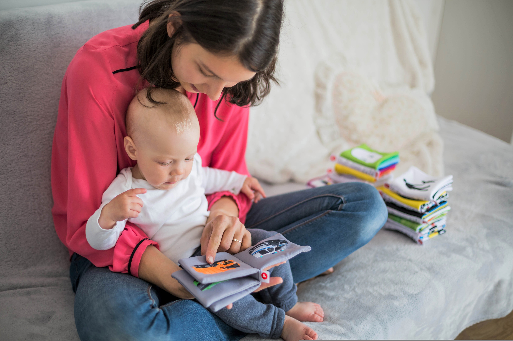

Tips ενθάρρυνσης ανάγνωσης

Η αγάπη για το βιβλίο δεν επιβάλλεται Γεννιέται μέσα από μικρές στιγμές που γεμίζουν χαρά και φαντασία. Για να αγαπήσει το βιβλίο το παιδί σου και να μοιράζεστε την ίδια αγάπη, ακολούθησε τα παρακάτω tips:
- Δώσε πρώτη το καλό παράδειγμα. Όταν το παιδί σε βλέπει να διαβάζεις, θα καταλάβει πως το βιβλίο είναι μέρος της καθημερινότητας.
\
- Επέτρεψε του να επιλέγει εκείνο τα βιβλία που θέλει να διαβάσει, ακόμα και αν δεν είναι αυτά που θα επέλεγες εσύ.
- Φτιάξε μια ήρεμη και όμορφη γωνιά ανάγνωσης, όπου θα συνδέεται με ευχαρίστηση και χαλάρωση.
- Καθιέρωσε μια συγκεκριμένη ώρα μέσα στη μέρα για διάβασμα, όπως λίγο πριν να κοιμηθεί.
- Αν το παιδί είναι αρκετά μικρό και του διαβάζεις εσύ το κείμενο, κάνε την ανάγνωση διαδραστική. Δηλαδή, άλλαξε φωνή ανάλογα με τον ήρωα του βιβλίου, κάνε του ερωτήσεις ή ζήτα του να φανταστεί τη συνέχεια της ιστορίας.
- Διάβαζε μαζί του, το δικό σου βιβλίο. Η κοινή ανάγνωση βελτιώνει τη σχέση και κάνει πιο ζεστή την εμπειρία της ανάγνωσης.
- Συνδύασε τα βιβλία με τα ενδιαφέροντα του. Για παράδειγμα, αν αγαπάει το μυστήριο, πρότεινε του βιβλία μυστηρίου.
- Επισκέψου μαζί του δημοτικές βιβλιοθήκες ή βιβλιοπωλεία για να νιώσει τη χαρά της ανακάλυψης ενός νέου βιβλίου.
- Επαίνεσε κάθε μικρό βήμα. Αυτή η ενθάρρυνση χτίζει αυτοπεποίθηση και δημιουργεί μια θετική σχέση με το διάβασμα.
Με τα παραπάνω tips το βιβλίο δεν θα γίνει μια απλή συνήθεια του παιδιού σου, αλλά ένας αγαπημένος φίλοςπου θα μεγαλώσει μαζί του.
Ποια είναι τα οφέλη της ανάγνωσης λογοτεχνικών βιβλίων;
Το διάβασμα λογοτεχνικών βιβλίων δεν είναι μόνο μια καθημερινή συνήθεια για πολλούς ανθρώπους. Είναι ένα ταξίδι που δυναμώνει το μυαλό και αυξάνει τη φαντασία.
Τα οφέλη του είναι πολλά. Πιο συγκεκριμένα:
- Ενισχύει τη φαντασία και τη δημιουργικότητα.
- Βελτιώνει την ικανότητα έκφρασης και το λεξιλόγιο, στον προφορικό και στον γραπτό λόγο
- Καλλιεργεί τη συγκέντρωση και την προσοχή.
- Ελαχιστοποιεί το άγχος και μειώνει την κατάθλιψη χαρίζοντας ψυχική ηρεμία.
- Διευρύνει τους ορίζοντες, βοηθώντας τον αναγνώστη να γνωρίσει νέες κουλτούρες και να αποκτήσει νέες εμπειρίες.
- Βοηθά στην ανάπτυξη της ενσυναίσθησης, καθώς ο αναγνώστης μπαίνει στη θέση διαφορετικών χαρακτήρων
- Ενισχύει τη μνήμη και τη νοητική λειτουργία καθώς ο εγκέφαλος εξασκείται τακτικά με την ανάγνωση
- Καλλιεργεί την πειθαρχία και τη σταθερή συνήθεια της μάθησης
- Προσφέρει ψυχαγωγία συνδυάζοντας ταυτόχρονα τη γνώση
Συνοψίζοντας, το διάβασμα είναι ένα πολύτιμο δώρο που μπορούμε να χαρίσουμε στον εαυτό μας, μα και στα αγπαημένα μας άτομα.